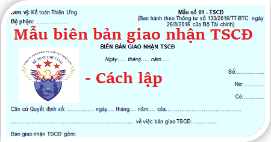

Hướng dẫn cách lập Biên bản giao nhận TSCĐ theo Thông tư 133 và 200 - Mẫu 01-TSCĐ, Biên bản giao nhận Tài sản cố định nhằm xác nhận việc giao nhận TSCĐ sau khi hoàn thành xây dựng, mua sắm, được cấp trên cấp, được tặng, biếu, viện trợ, nhận góp vốn, TSCĐ thuê ngoài...đưa vào sử dụng tại đơn vị hoặc tài sản của đơn vị bàn giao cho đơn vị khác theo lệnh của cấp trên, theo hợp đồng góp vốn,...
I. Mẫu Biên bản giao nhận TSCĐ:
|
Đơn vị: Kế toán Diệu Tâm Bộ phận: ……………… |
Mẫu số 01 - TSCĐ (Ban hành theo Thông tư số 133/2016/TT-BTC ngày 26/8/2016 của Bộ Tài chính) |
BIÊN BẢN GIAO NHẬN TSCĐ
Ngày 15 tháng 09 năm 2026
Ngày 15 tháng 09 năm 2026
Số:…….….…..
Nợ:….….….
Có:….….….
Căn cứ Quyết định số: ……. ngày 15 tháng 09 năm 2026 của…….….….….Nợ:….….….
Có:….….….
….….….….….….….….…. về việc bàn giao TSCĐ….….….….
Ban giao nhận TSCĐ gồm:
- Ông/Bà……………………… chức vụ…………………. Đại diện bên giao
- Ông/Bà……………………… chức vụ…………………. Đại diện bên nhận
- Ông/Bà……………… …… chức vụ…………………. Đại diện …………..
Địa điểm giao nhận TSCĐ: ………….…………………….……………
Xác nhận việc giao nhận TSCĐ như sau:
| STT | Tên, ký hiệu quy cách (cấp hạng TSCĐ) | Số hiệu TSCĐ | Nước sản xuất (XD) | Năm sản xuất | Năm đưa vào sử dụng | Công suất (diện tích thiết kế) | Tính nguyên giá tài sản cố định | |||||
| Giá mua (ZSX) | Chi phí vận chuyển | Chi phí chạy thử | … | Nguyên giá TSCĐ | Tài liệu kỹ thuật kèm theo | |||||||
| A | B | C | D | 1 | 2 | 3 | 4 | 5 | 6 | 7 | 8 | E |
|
|
||||||||||||
| Cộng | x | x | x | x | x | x | ||||||
DỤNG CỤ, PHỤ TÙNG KÈM THEO
| Số thứ tự | Tên, qui cách dụng cụ, phụ tùng | Đơn vị tính | Số lượng | Giá trị |
| A | B | C | 1 | 2 |
|
|
|
Giám đốc bên nhận (Ký, họ tên, đóng dấu) |
Kế toán trưởng bên nhận (Ký, họ tên) |
Người nhận (Ký, họ tên) |
Người giao (Ký, họ tên) |
II. Cách lập BIÊN BẢN GIAO NHẬN TÀI SẢN CỐ ĐỊNH
1. Mục đích:
- Nhằm xác nhận việc giao nhận TSCĐ sau khi hoàn thành xây dựng, mua sắm, được cấp trên cấp, được tặng, biếu, viện trợ, nhận góp vốn, TSCĐ thuê ngoài...đưa vào sử dụng tại đơn vị hoặc tài sản của đơn vị bàn giao cho đơn vị khác theo lệnh của cấp trên, theo hợp đồng góp vốn,...(không sử dụng biên bản giao nhận TSCĐ trong trường hợp nhượng bán, thanh lý hoặc tài sản cố định phát hiện thừa, thiếu khi kiểm kê). Biên bản giao nhận TSCĐ là căn cứ để giao nhận TSCĐ và kế toán ghi sổ (thẻ) TSCĐ, sổ kế toán có liên quan.
2 . Phương pháp và trách nhiệm ghi
Góc trên bên trái của Biên bản giao nhận TSCĐ ghi rõ tên đơn vị (hoặc đóng dấu đơn vị), bộ phận sử dụng. Khi có tài sản mới đưa vào sử dụng hoặc điều tài sản cho đơn vị khác, đơn vị phải lập hội đồng bàn giao gồm: Đại diện bên giao, đại diện bên nhận và 1 số ủy viên.
Biên bản giao nhận TSCĐ lập cho từng TSCĐ. Đối với trường hợp giao nhận cùng một lúc nhiều tài sản cùng loại, cùng giá trị và do cùng 1 đơn vị giao có thể lập chung 1 biên bản giao nhận TSCĐ.
Cột A, B: Ghi số thứ tự, tên, ký mã hiệu, qui cách (cấp hạng) của TSCĐ.
Cột C: Ghi số hiệu TSCĐ.
Cột D: Ghi nước sản xuất (xây dựng).
Cột 1: Ghi năm sản xuất.
Cột 2: Ghi năm bắt đầu đưa vào sử dụng.
Cột 3: Ghi công suất (diện tích, thiết kế) như xe FORD 16 chỗ ngồi, hoặc máy phát điện 75 KVA, ...
Cột 4, 5, 6, 7: Ghi các yếu tố cấu thành nên nguyên giá TSCĐ gồm: Giá mua (hoặc giá thành sản xuất) (cột 4); chi phí vận chuyển, lắp đặt (cột 5); chi phí chạy thử (cột 6).
Cột 8: Ghi nguyên giá TSCĐ (cột 7 = cột 4 + cột 5 + cột 6 +...).
Cột E: Ghi những tài liệu kỹ thuật kèm theo TSCĐ khi bàn giao.
Bảng kê phụ tùng kèm theo: Liệt kê số phụ tùng, dụng cụ đồ nghề kèm theo TSCĐ khi bàn giao.
- Sau khi bàn giao xong các thành viên ban giao, nhận TSCĐ cùng ký vào biên bản.
- Biên bản giao nhận TSCĐ được lập thành 2 bản, mỗi bên (giao, nhận) giữ 1 bản chuyển cho phòng kế toán để ghi sổ kế toán và lưu.
Xem thêm: Mẫu bảng tính và phân bổ khấu hao TSCĐ
--------------------------------------------------------------------
--------------------------------------------------------------------
